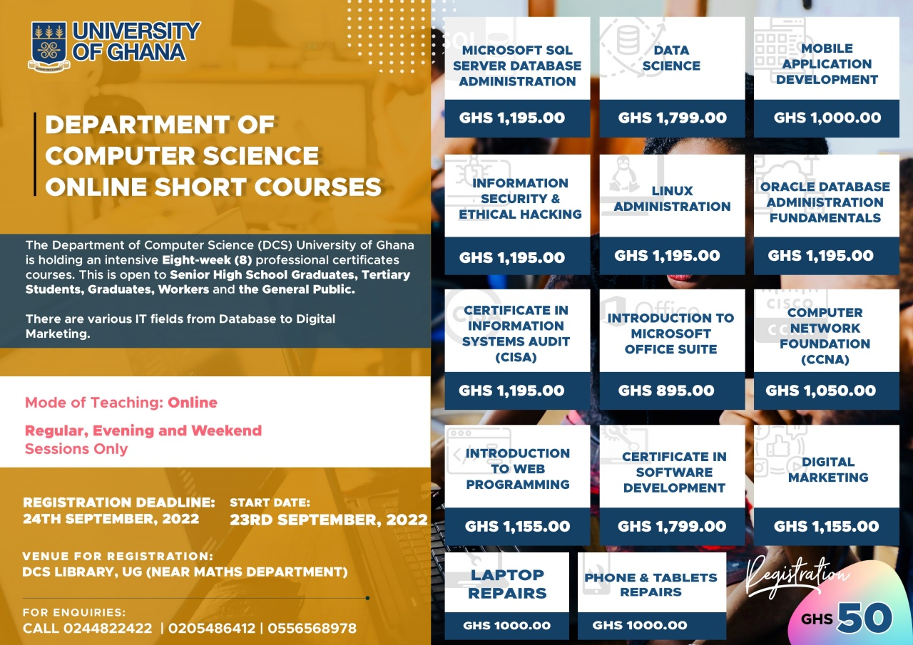

Welcome to the Computer Science Department Homepage

Here, both Computer Science and Information Technolgy are offered. Both graduate and undergraduate Programs are also offered. Navigate to the programs page for more info.

The Department of Computer Science also offers Online Short Courses.
The Department of computer Science of the University of Ghana is holding intensive Eight-Week (8) professional certificate courses which are open to Senior High School Graduates,
Tertiary Students, Graduates, Workers and the General Public.
For more enqueries click Department of Computer Science Online Short Courses